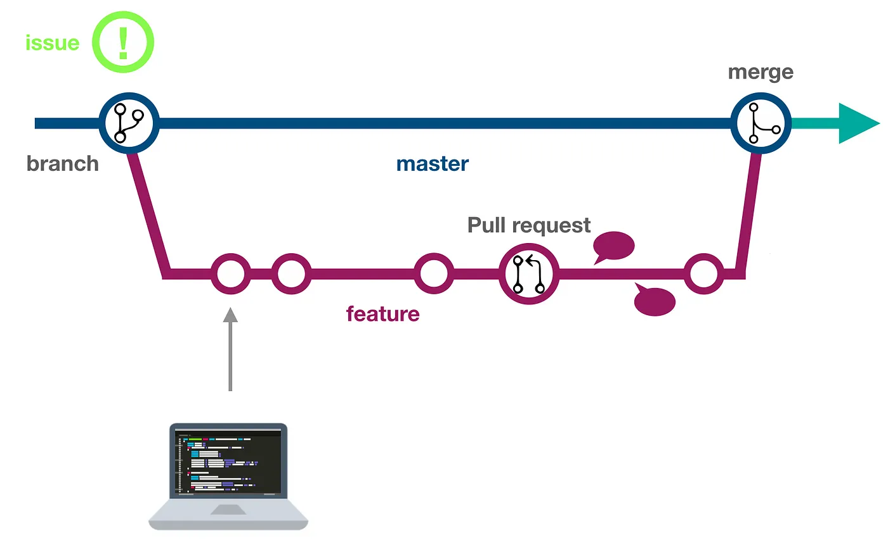

Developer’s Guide
The Seshat project is open source and welcomes contributions from developers. This guide is written for the core project maintainers working at the Complexity Science Hub in Vienna and The Alan Turing Institute in London.
Getting started
If you are a core developer on the Seshat project, ensure you are a maintainer of the Seshat repository, found at Seshat-Global-History-Databank/seshat.
Ask an existing maintainer to add you if you are not already a maintainer.
If you are not a core developer, you can still contribute by forking the repository and submitting pull requests from there.
Follow the instructions in the Setting up Seshat in a local environment guide to set up your local development environment.
Review the Seshat development project board on GitHub.
The project board is used to track the progress of issues and pull requests.
The board is divided into columns for each stage of the development process, such as “To do”, “In progress”, and “Done”.
Assign yourself to issues you intend to work on.
This helps to prevent multiple people working on the same issue at the same time.
Place an issue in the “In progress” column if you are actively working on it.
Otherwise order your assigned issues in the “To do” column by priority.
Create new issues for upcoming development tasks here and add them to the project board. There are issue templates set up for:
Bug reports
Feature requests
Documentation improvements
Development workflow
Select an issue to work on from the Seshat development project board on GitHub, or create a new issue as described above.
Assign the issue to yourself.
Move the issue to the “In progress” column on the project board.
Create a new branch from the dev branch.
You should have cloned the Seshat repository to your local machine when setting up your development environment. See Setting up Seshat in a local environment for more information on running the Seshat application locally.
Ensure you have run git pull to get the latest changes from the dev branch.
Create a new branch for your changes based on the dev branch. The branch name could be descriptive of the issue you are working on, e.g. fix-1234 or feature-5678.
Implement your code changes.
Commit each change with a descriptive commit message.
Push your branch to GitHub as you work on it or when you have completed the changes.
Test your changes locally.
Ensure your changes work as expected in your local development environment.
If you have added new migrations, apply them to the database.
[Optional] Add tests if appropriate.
[Optional] You can run tests locally to ensure your changes do not break existing functionality. See the Testing guide for more information. Tests will also be run automatically on GitHub actions when you open a pull request.
[Optional] Test your changes on the staging server if needed.
ssh into the staging server. See websites for details on current servers maintained by the project.
Run git fetch and then git checkout <new branch name>.
You may also need to restart Gunicorn to see the changes. See the setup docs for guidance.
If you have added new migrations, apply them to the database.
Make sure your changes work as expected on the staging server.
Open a pull request on GitHub.
On GitHub, open a pull request from the new branch to the dev branch. Make sure the base repository is set to Seshat-Global-History-Databank/seshat.
Add a descriptive title and description to the pull request.
You can include “Closes #<issue number>” in the pull request description if you want to automatically close the issue when the pull request is merged.
[Optional] Assign the pull request to maintainer(s) for review if needed.
Review and address any feedback or problems on the pull request.
If any of the GitHub actions fail, check the logs to see what went wrong. You may need to make changes to your code and push them to the branch.
If reviewers have added comments, make changes to your code based on the feedback, adding new commits to the branch and pushing them to the remote repository.
Once the feedback is addressed, request a review from the maintainer(s) again.
Once your pull request is ready (and approved by any reviewers), it can be merged into the dev branch.
Remember to close the issue associated with the pull request manually if it wasn’t already closed by the merge.
The closed issue will be automatically moved to the “Done” column on the project board.
Pull the latest changes from the dev branch to the production server hosting the Seshat website.
ssh into the production server. See websites for details on current servers maintained by the project.
Ensure any new migrations are applied to the database.
You may also need to restart Gunicorn to see the changes. See the setup docs for guidance.
GitHub workflow visualised
As described above, development on Seshat follows a basic GitHub workflow. The diagram below illustrates the steps involved in the process, from selecting an issue to merging a pull request. Note that the master branch is called dev in the Seshat repository. Feature branches should be named appropriately based on the issue they are addressing.
Image taken from The GitHub Flow by Dev Genius
Updating this documentation
If you are making changes to the Seshat project that require updates to the documentation, you can do so by following these steps:
[Optional] Follow the developers guide above and open a GitHub issue using the Documentation Improvement template.
Make your changes to the documentation in the docs/source directory. The pages are written in reStructuredText format.
Build the documentation locally to check that your changes are rendering correctly.
pip install -r docs/requirements.txt
cd docs
make html
In your browser, open the docs/build/html/index.html file to view the updated documentation.
Make a pull request with your changes to the dev branch. Follow the steps in the Development workflow section above.
GitHub actions will automatically build the documentation when you open a pull request. Fix any errors that are flagged.
Once your pull request is merged, the documentation will be automatically updated on the Seshat documentation site.